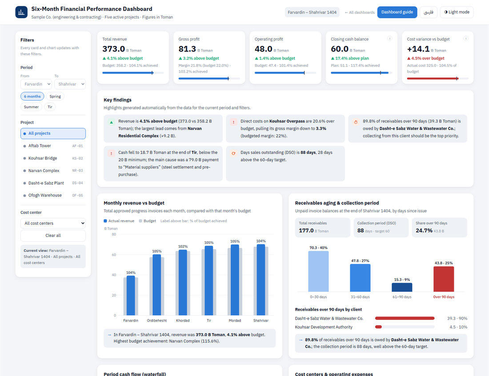
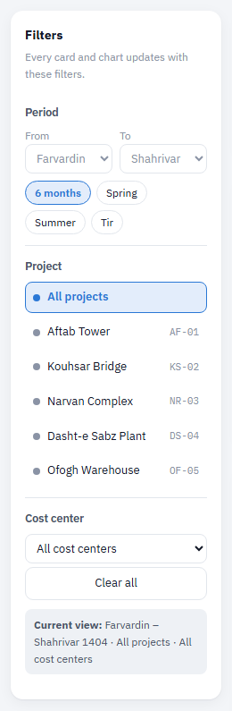
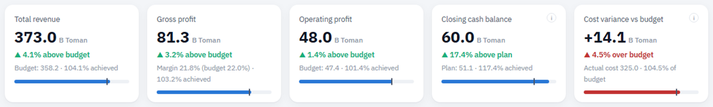
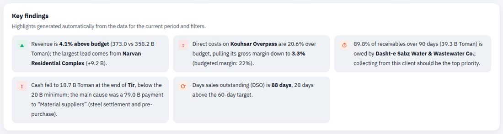
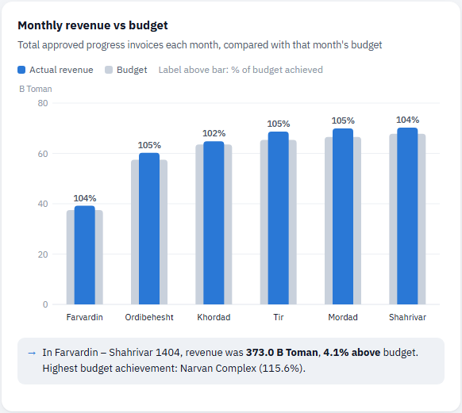
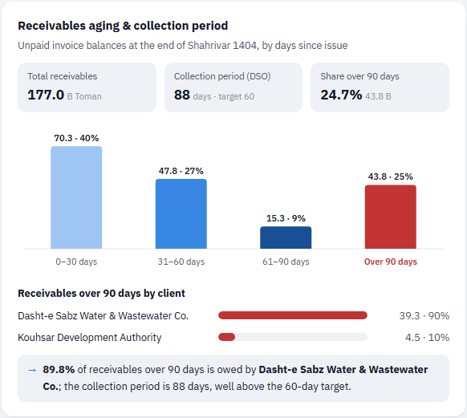
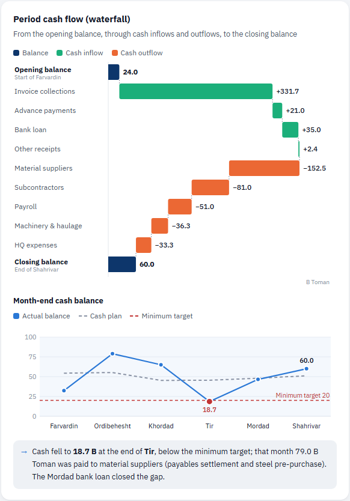
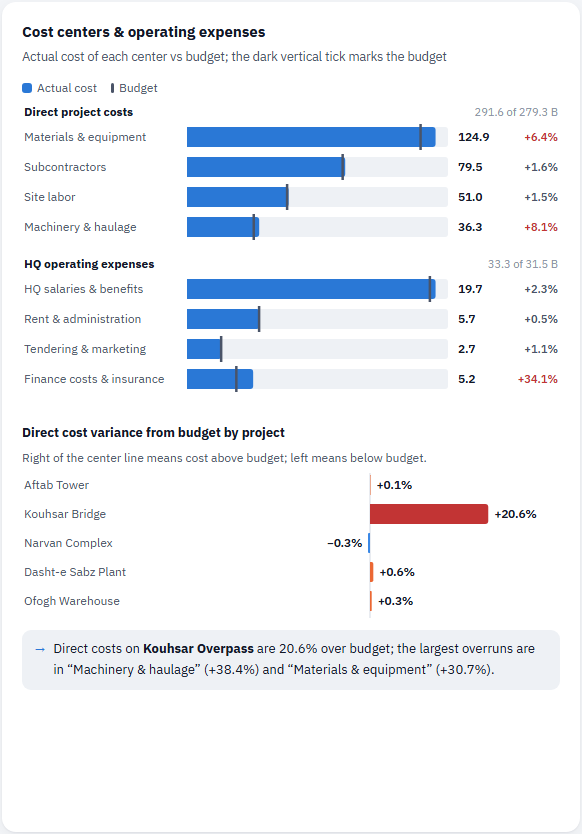
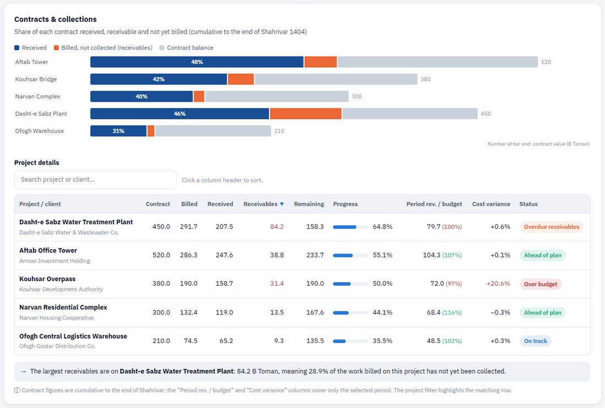
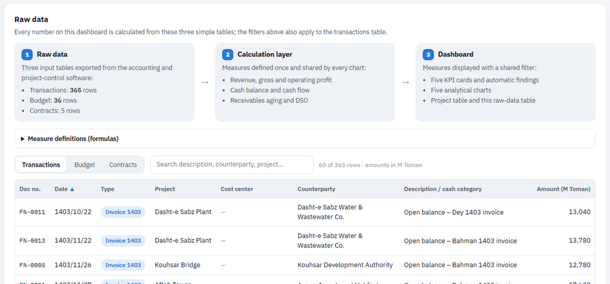

Six-Month Financial Performance Dashboard
This guide explains what each part of the dashboard shows, how to read it and which question it answers. Every number quoted in the examples is calculated live from the dashboard's own data (default view: six months, all projects).
1At a glance
“Sample Co.” is an engineering and contracting company with five active projects. On a single page, the dashboard shows the CEO, the CFO and the board how the first six months of 1404 went financially:
- Where do revenue and profit stand against budget?
- Was there enough cash, and when did it get tight?
- Which clients pay late?
- Which project has overspent its budget?
- How far along is each contract, and how much of it has been collected?

The dashboard is built in three layers: raw data (transactions, budget and contracts) → calculation layer (defined measures) → presentation. That makes every number traceable, and when next month's data is added the whole dashboard updates with no manual changes.
2Quick start
- Scan the cards. The five cards at the top tell you in seconds where things stand against budget: green means better than budget, red means worse.
- Read the findings. The “Key findings” panel states the most important points in plain sentences with exact figures, so you know which chart deserves a closer look.
- Drill down with filters. Pick a project or a month and every section focuses on that slice. Hover over any bar to see the exact details.
3Filters

There are three filters, and every selection is applied to all sections at once. The “Current view” box under the filters always tells you what you are looking at, and “Clear all” returns the dashboard to the six-month view.
- Period: start and end month, or the “6 months”, “Spring”, “Summer” and “Tir” shortcuts.
- Project: any one of the five projects, or all projects.
- Cost center: materials, subcontractors, site labor, machinery or HQ expenses.
Which filter affects which section?
| Section | Period | Project | Cost center |
|---|---|---|---|
| Revenue, gross profit, operating profit | ✓ | ✓ | — |
| Closing cash balance (card) | ✓ | — company-wide | — |
| Cost variance vs budget (card) | ✓ | ✓ | ✓ |
| Key findings | ✓ | ✓ | Partly |
| Monthly revenue vs budget | ✓ highlight | ✓ | — |
| Receivables aging and DSO | ✓ to period end | ✓ | — |
| Cash flow waterfall | ✓ | ✓ project flows only | — |
| Month-end cash balance | ✓ highlight | — company-wide | — |
| Cost centers and project variance | ✓ | ✓ | ✓ |
| Contract status | ✓ cumulative to period end | ✓ highlight | — |
| Raw data (transactions) | ✓ | ✓ | ✓ |
Wherever a filter has no effect, a small note marked ⓘ under the chart explains why; for example, revenue is not split by cost center, and the bank balance belongs to the whole company rather than to a single project.
See the filters in the dashboard →4KPI cards

What does it show?
Total revenue, gross profit, operating profit, closing cash balance and cost variance vs budget. All amounts are in billion Toman.
How to read it
The large number is the actual value. The line below it shows the gap to budget with ▲ or ▼; green means favorable to the company and red means unfavorable (on the cost card, a cost increase is red). The bar at the bottom of each card is budget achievement, and the small vertical tick on it marks 100%.
5Key findings

This panel holds five short sentences built from the dashboard's own calculations, rewritten whenever the filters change. The colored icon next to each sentence shows its type: green is good news, orange needs follow-up and red is a warning.
6Monthly revenue vs budget

What does it show?
Each month's revenue is the total of progress invoices approved in that month. Months run from left to right, with Farvardin on the left.
How to read it
If the blue bar is taller than the gray one, that month was ahead of budget. The number above each bar is the budget achievement percentage. Months outside the selected period are faded so the comparison context is not lost.
7Receivables aging & collection period

What does it show?
Invoices that have been issued but not yet fully collected, grouped into four buckets by days since issue: 0–30, 31–60, 61–90 and over 90 days. The position is measured at the end of the last month in the period.
How to read it
The larger the red bar (over 90 days), the higher the collection risk. “Days sales outstanding (DSO)” tells you how many days, on average, it takes for revenue to turn into cash; the company's target is 60 days.
8Cash flow (waterfall) & monthly balance

What does it show?
The waterfall starts from the opening cash balance, adds cash inflows by type (invoice collections, advance payments, bank loan, other) and subtracts outflows by type (materials, subcontractors, payroll, machinery, HQ expenses) to arrive at the closing balance. The line chart below compares each month-end balance with the cash plan and the minimum target (20 B Toman).
How to read it
Green bars push cash up and orange bars pull it down. The dark bars at the start and end are balances. On the line chart, a red dot means that month's balance fell below the minimum target.
9Cost centers & project variance

What does it show?
The top part shows costs in two groups: direct project costs (four cost centers) and HQ operating expenses. Each group has its own scale because HQ expenses are much smaller. The bottom part shows each project's direct cost variance from budget as a percentage.
How to read it
If the blue bar extends past the dark vertical tick (the budget), that center has overspent. The number at the right end of each row is the variance percentage; red means more than 3% over budget. In the lower chart, a bar pointing right means cost above budget.
10Contracts & collections

What does it show?
The length of each bar is proportional to the contract value and has three parts: dark blue is the amount received from the client; orange is work done and invoiced but not yet paid; gray is the part of the contract not yet executed. Figures are cumulative from the start of the contract.
How to read it
In the table, click any column header to sort, and use the search box to find a project or client. The “Status” column is labeled automatically: “Over budget” (cost variance above 10%), “Overdue receivables” (more than 30% of receivables over 90 days), “Ahead of plan” and “On track”.
11Raw data

This section shows the data the dashboard is built on. There are three input tables:
- Transactions ( rows): each row is a document of type invoice, receipt, cost or payment, with its date, project, cost center, counterparty and amount in million Toman.
- Budget ( rows): the monthly revenue and cost budget for each project and for head office.
- Contracts (5 rows): contract value, client and work billed to the end of 1403.
Every measure is defined only once, in the calculation layer (the formulas are listed under “Measure definitions” in the dashboard), and every chart uses that same definition, so two charts never show different numbers for the same concept. To update for the next month, simply append the new transactions to the first table.
12Frequently asked questions
Why doesn't the cash balance change with the project filter?
The bank account belongs to the whole company and is not split between projects. With a project filter, the waterfall shows only that project's receipts and payments and their net total, but the cash card and the monthly balance chart stay at company level.
How is operating profit calculated for a single project?
HQ expenses do not belong to any specific project. When you filter by a project, its share of HQ expenses is allocated in proportion to its revenue and subtracted from gross profit. This method is explained by the ⓘ icon on the operating profit card.
Why is revenue above budget while operating profit is only roughly on budget?
Two factors have offset the sales lead: the cost overrun on the Kouhsar Bridge project and the finance costs of the Mordad loan. The “Cost variance vs budget” card and the cost center section show exactly this.
What does receivables aging show when I select “Spring”?
Receivables are always a point-in-time snapshot; with Spring selected, the position at the end of Khordad is shown and DSO is calculated from revenue for those three months.
Can the dashboard be connected to the company's real data?
Yes. All it needs is an export of transactions, budget and contracts from the accounting software in the same three-table format; the calculation layer and charts work unchanged.
13Glossary
- Progress invoice
- A periodic invoice from the contractor to the client for work completed; in this dashboard it is the basis for recognizing revenue.
- Gross profit
- Revenue minus direct project costs (materials, subcontractors, site labor, machinery).
- Operating profit
- Gross profit minus head-office expenses (HQ salaries, administration, tendering, finance and insurance).
- Budget achievement
- Actual value divided by budget; 100% means exactly on budget.
- Receivables
- The amount of invoices issued but not yet collected.
- Receivables aging
- Grouping of receivables by the number of days since the invoice was issued.
- Days sales outstanding (DSO)
- Closing receivables ÷ period revenue × days in period; the average number of days it takes to turn revenue into cash.
- Advance payment
- An amount the client pays before work is done, later deducted from progress invoices.
- Waterfall chart
- A chart showing how a starting value reaches an ending value through a series of increases and decreases.
- Cash plan
- The forecast cash balance at the end of each month, based on the revenue and cost budget and the usual collection pattern.
- Financial progress
- Cumulative billed work divided by the contract value.